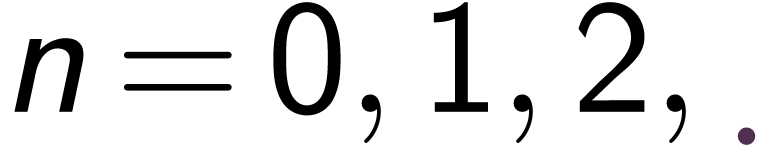
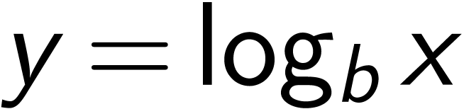
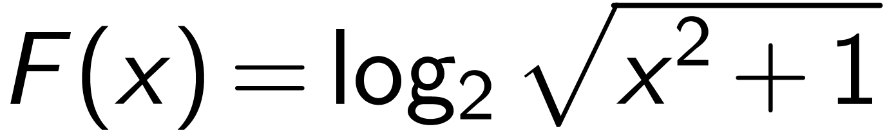

|
1Functions and Models
A function is a rule to assign to a variable,
say  , an
unique value, say . In general, we can write
, an
unique value, say . In general, we can write
Here
-
is the name of the function
-
is called the independent variable
-
 is called the
dependent variable
is called the
dependent variable
The set of values that
can take is called the domain of the function.
The set of all possible values of constitute the range.
is read f of x.
We can view a function as a machine, that takes the input , and gives the output .
The graph of a function is the curve
: the plane
Vertical Line Test
piecewise defined function
This function can also be written as
symmetry (even/odd functions)
increasing/decreasing functions
2A catalog of essential functions
-
linear functions
where
 is the
slope, and is the -intercept.
is the
slope, and is the -intercept.
For a linear function, if , then
Graphing calculator: www.desmos.com
-
power functions
The property depends on the value of
 .
.
-
If , then it's an even function, and it's increasing function for and decreasing for .
-
If , then it's an odd function, and it's increasing function for all .
-
If , then it's an even function, and it's decreasing function for and increasing for .
-
If , then it's an odd function, and it's decreasing function for or .
-
If , then the function is defined only for , and it's an increasing function.
-
If
 , then the function
is defined for all ,
and it's an increasing function.
, then the function
is defined for all ,
and it's an increasing function.
-
other cases: read the slides or book
-
-
polynomials
where is called the degree of the polynomial, and 's are called the coefficients. For example, is a polynomial of degree 2, or we call it a quadratic polynomial, and is a polynomial of degree 3, also called a cubic polynomial.
The domain of any polynomial is .
-
rational functions

where are both polynomials. For example
The domain of a rational function is all except where .
-
algebraic functions: any function the can be obtained by addition, subtraction, multiplication, and raising to rational powers of . For example
-
exponential functions
where is called the base, is called the exponent.
-
logarithmic functions
 they are actually the inverse functions of exponential functions, i.e.
-
trigonometric functions
Elementary building blocks:
-
power functions
-
exponential functions
-
logarithmic functions
-
trigonometric functions
3New functions from old
-
translations (move the graph up/down, left/right)
-
vertical translation

-
horizontal translation
-
-
stretching and reflecting
-
vertical stretching/reflecting
-
horizontal stretching/reflecting
-
-
algebraic combinations
-
composition
read as of of , or composed with
Example
2 . If and . Then -
-
-
Example
3 . Write the function  as a composition of 3 functions.Answer: Let . Then
-
Application example (compound interest): Suppose you deposit an amount of in an account with annual interest rate of . The balance after
 years, if the interest is compounded
years, if the interest is compounded
-
annualy, then
-
monthly, then
-
times per year, then
-
continuously, then

where is called the natural base.
Here we are using the formula
-